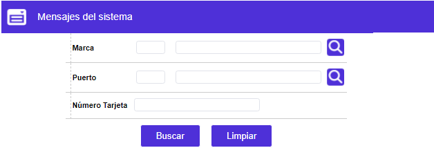
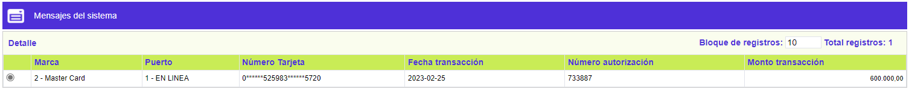
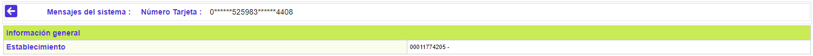

|
Consulta mensajes del sistema |
Esta función permite consultar en detalle el histórico de las autorizaciones otorgadas por el sistema y que ya fueron procesadas.
Filtro: El formulario cuenta con tres campos o criterios para realizar la búsqueda, mínimo debe contener un dato, si bien cuando se invoca, retorna todos los registros que tiene el sistema para ser consultados, lo pertinente es filtrar por el o los criterios indicados:

|
Marca |
Campo en el que se puede digitar o seleccionar de la lista de valores provista, el código numérico correspondiente a la franquicia para la que se desea efectuar la consulta del histórico de autorizaciones ya procesadas. |
|
Puerto |
Campo en el que se puede digitar o seleccionar de la lista de valores provista, el código numérico correspondiente a al puerto para el que se desea efectuar la consulta del histórico de autorizaciones ya procesadas. |
|
Número tarjeta |
Campo en el que se digita el número de tarjeta del cliente para la que se desea efectuar la consulta del histórico de autorizaciones ya procesadas. |
A través del botón Buscar, se muestra un formulario que contiene la siguiente información, junto con la opción Detalle.

|
Marca |
Campo que ilustra la franquicia a la que pertenece la tarjeta asociada a cada uno de los registros del histórico de autorizaciones ya procesadas. |
|
Puerto |
Campo que muestra el puerto por el que se gestionó cada uno de los registros del histórico de autorizaciones ya procesadas. |
|
Número tarjeta |
Campo que ilustra el número de tarjeta asociada a cada uno de los registros del histórico de autorizaciones ya procesadas. |
|
Fecha de transación |
Campo que en formato YYYY-MM-DD notifica la fecha en la que se efectuó la utilización de cada uno de los registros del histórico de autorizaciones ya procesadas. |
|
Número de autorización |
Campo que contiene el dato asignado por el sistema, a cada una de las utilizaciones, de los registros del histórico de autorizaciones ya procesadas. |
|
Monto transacción |
Campo que ilustra el valor de la utilización asociado a cada uno de los registros del histórico de autorizaciones ya procesadas. |
Detalle: A través de este botón el sistema muestra un formulario con la siguiente información:

|
Establecimiento |
Campo que muestra el código del establecimiento en dónde se efectuó la utilización del registro del histórico de autorizaciones ya procesadas. |